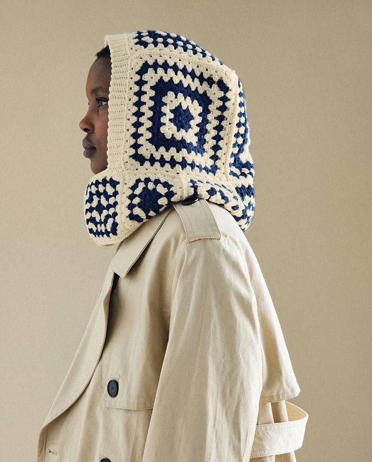

Collection & Sorting
We partner with local communities, thrift stores, and textile manufacturers to collect discarded fabrics and clothing. Each item is carefully sorted based on material quality, condition, and potential for transformation.
The Revive Project focuses on recycling used clothes and excess fabrics to give them a second life. Our mission is to minimize textile waste and inspire sustainable fashion habits within local communities.
By collecting, reworking, and creatively transforming materials, we bring new value to what was once discarded — combining design, environmental awareness and social responsibility in every product we create.

We believe fashion can live longer, be more gentle, and truly reflect your personality. Items with history are the most valuable. Rather than creating new to forget the old, we restore, reimagine, and build a bridge between the maker's hand and your personal choice. Our aim is to lower textile waste through mindful design and craftsmanship that honors both material and memory.
We partner with local communities, thrift stores, and textile manufacturers to collect discarded fabrics and clothing. Each item is carefully sorted based on material quality, condition, and potential for transformation.
Our team of designers and artisans reworks materials using techniques like patchworking, embroidery, and reconstruction. We combine traditional craftsmanship with contemporary design to create unique, one-of-a-kind pieces.
Through our network of partnering cafés and showrooms, we make sustainable fashion accessible. We also host workshops to educate communities about textile waste and upcycling techniques.
See the difference we’re making together for our planet
12,750
kilograms
That’s equivalent to planting over 500 trees!
8,450
items
Given new life instead of ending up in landfills
1,034
kilograms
Given a chance to become an actual clothes
We’ve made the process of upcycling as simple as online shopping. Here is how your clothes get a second life.
Take photos of your clothes. Describe your idea or choose a reference from our catalog.
Chat with a crafter, agree on the design, price, and deadline directly.
We generate a shipping label. Pack your items and drop them off at the nearest post office.
Get your unique, professionally upcycled piece delivered back to your door.
To ensure your redesigned item fits perfectly, we recommend taking fresh measurements. It takes only 2 minutes.